Linking yield with NLR PAV
Philipp Bayer
2020-09-22
Last updated: 2020-11-18
Checks: 7 0
Knit directory: R_gene_analysis/
This reproducible R Markdown analysis was created with workflowr (version 1.6.2.9000). The Checks tab describes the reproducibility checks that were applied when the results were created. The Past versions tab lists the development history.
Great! Since the R Markdown file has been committed to the Git repository, you know the exact version of the code that produced these results.
Great job! The global environment was empty. Objects defined in the global environment can affect the analysis in your R Markdown file in unknown ways. For reproduciblity it’s best to always run the code in an empty environment.
The command set.seed(20200917) was run prior to running the code in the R Markdown file. Setting a seed ensures that any results that rely on randomness, e.g. subsampling or permutations, are reproducible.
Great job! Recording the operating system, R version, and package versions is critical for reproducibility.
Nice! There were no cached chunks for this analysis, so you can be confident that you successfully produced the results during this run.
Great job! Using relative paths to the files within your workflowr project makes it easier to run your code on other machines.
Great! You are using Git for version control. Tracking code development and connecting the code version to the results is critical for reproducibility.
The results in this page were generated with repository version 0e810db. See the Past versions tab to see a history of the changes made to the R Markdown and HTML files.
Note that you need to be careful to ensure that all relevant files for the analysis have been committed to Git prior to generating the results (you can use wflow_publish or wflow_git_commit). workflowr only checks the R Markdown file, but you know if there are other scripts or data files that it depends on. Below is the status of the Git repository when the results were generated:
Ignored files:
Ignored: .Rhistory
Ignored: .Rproj.user/
Untracked files:
Untracked: data/Brec_R1.txt
Untracked: data/Brec_R2.txt
Untracked: data/CR15_R1.txt
Untracked: data/CR15_R2.txt
Untracked: data/CR_14_R1.txt
Untracked: data/CR_14_R2.txt
Untracked: data/KS_R1.txt
Untracked: data/KS_R2.txt
Untracked: data/NBS_PAV.txt.gz
Untracked: data/NLR_PAV_GD.txt
Untracked: data/NLR_PAV_GM.txt
Untracked: data/PAVs_newick.txt
Untracked: data/PPR1.txt
Untracked: data/PPR2.txt
Untracked: data/SNPs_newick.txt
Untracked: data/bac.txt
Untracked: data/brown.txt
Untracked: data/cy3.txt
Untracked: data/cy5.txt
Untracked: data/early.txt
Untracked: data/flowerings.txt
Untracked: data/foregeye.txt
Untracked: data/height.txt
Untracked: data/late.txt
Untracked: data/mature.txt
Untracked: data/motting.txt
Untracked: data/mvp.kin.bin
Untracked: data/mvp.kin.desc
Untracked: data/oil.txt
Untracked: data/pdh.txt
Untracked: data/protein.txt
Untracked: data/rust_tan.txt
Untracked: data/salt.txt
Untracked: data/seedq.txt
Untracked: data/seedweight.txt
Untracked: data/stem_termination.txt
Untracked: data/sudden.txt
Untracked: data/virus.txt
Untracked: data/yield.txt
Note that any generated files, e.g. HTML, png, CSS, etc., are not included in this status report because it is ok for generated content to have uncommitted changes.
These are the previous versions of the repository in which changes were made to the R Markdown (analysis/yield_link.Rmd) and HTML (docs/yield_link.html) files. If you’ve configured a remote Git repository (see ?wflow_git_remote), click on the hyperlinks in the table below to view the files as they were in that past version.
| File | Version | Author | Date | Message |
|---|---|---|---|---|
| Rmd | 0e810db | Philipp Bayer | 2020-11-18 | More fixedp lots |
| html | 4ed2150 | Philipp Bayer | 2020-11-18 | Build site. |
| Rmd | f0de005 | Philipp Bayer | 2020-11-18 | PLots in one row now |
| html | e324223 | Philipp Bayer | 2020-11-18 | Build site. |
| Rmd | b8b60b1 | Philipp Bayer | 2020-11-18 | Add StrengeJacke plots |
| html | fb8bbfb | Philipp Bayer | 2020-11-18 | Build site. |
| Rmd | f0a5bdb | Philipp Bayer | 2020-11-18 | give me back my warnings |
| html | adbc058 | Philipp Bayer | 2020-11-18 | Build site. |
| Rmd | dc2aad4 | Philipp Bayer | 2020-11-18 | wflow_publish(“analysis/yield_link.Rmd”) |
| html | 359d849 | Philipp Bayer | 2020-11-18 | Build site. |
| Rmd | facd3e7 | Philipp Bayer | 2020-11-18 | wflow_publish(“analysis/yield_link.Rmd”) |
| html | e84338b | Philipp Bayer | 2020-11-18 | Build site. |
| Rmd | 2009819 | Philipp Bayer | 2020-11-18 | fixed lme4 syntax |
| html | 22a48ac | Philipp Bayer | 2020-11-18 | Build site. |
| Rmd | 92e2580 | Philipp Bayer | 2020-11-18 | fixed lme4 syntax |
| html | 262a76f | Philipp Bayer | 2020-11-05 | Build site. |
| Rmd | 69e9c29 | Philipp Bayer | 2020-11-05 | wflow_publish(“analysis/yield_link.Rmd”) |
| html | 5ddfe2b | Philipp Bayer | 2020-11-05 | Build site. |
| Rmd | 25f0f54 | Philipp Bayer | 2020-11-05 | wflow_publish(“analysis/yield_link.Rmd”) |
| html | fa5c0ff | Philipp Bayer | 2020-11-04 | Build site. |
| Rmd | 2d9c3db | Philipp Bayer | 2020-11-04 | wflow_publish(c(“analysis/index.Rmd”, “analysis/yield_link.Rmd”)) |
| html | f34dd48 | Philipp Bayer | 2020-11-02 | Build site. |
| Rmd | be2f299 | Philipp Bayer | 2020-11-02 | wflow_publish(“analysis/yield_link.Rmd”) |
| html | 58f8610 | Philipp Bayer | 2020-11-02 | Build site. |
| Rmd | 5166687 | Philipp Bayer | 2020-11-02 | wflow_publish(“analysis/yield_link.Rmd”) |
| Rmd | dae157b | Philipp Bayer | 2020-09-24 | Update of analysis |
| html | dae157b | Philipp Bayer | 2020-09-24 | Update of analysis |
knitr::opts_chunk$set(message = FALSE)
library(tidyverse)-- Attaching packages ------------------------------------------------------------------------------------------------------------------- tidyverse 1.3.0 --v ggplot2 3.3.2 v purrr 0.3.4
v tibble 3.0.2 v dplyr 1.0.0
v tidyr 1.1.0 v stringr 1.4.0
v readr 1.3.1 v forcats 0.5.0-- Conflicts ---------------------------------------------------------------------------------------------------------------------- tidyverse_conflicts() --
x dplyr::filter() masks stats::filter()
x dplyr::lag() masks stats::lag()library(patchwork)
library(ggsci)
library(dabestr)Loading required package: magrittr
Attaching package: 'magrittr'The following object is masked from 'package:purrr':
set_namesThe following object is masked from 'package:tidyr':
extractlibrary(dabestr)
library(cowplot)
********************************************************Note: As of version 1.0.0, cowplot does not change the default ggplot2 theme anymore. To recover the previous behavior, execute:
theme_set(theme_cowplot())********************************************************
Attaching package: 'cowplot'The following object is masked from 'package:patchwork':
align_plotslibrary(ggsignif)
library(ggforce)
library(lme4)Loading required package: Matrix
Attaching package: 'Matrix'The following objects are masked from 'package:tidyr':
expand, pack, unpacklibrary(lmerTest)
Attaching package: 'lmerTest'The following object is masked from 'package:lme4':
lmerThe following object is masked from 'package:stats':
steplibrary(sjPlot)Learn more about sjPlot with 'browseVignettes("sjPlot")'.
Attaching package: 'sjPlot'The following objects are masked from 'package:cowplot':
plot_grid, save_plotlibrary(dotwhisker)
library(pals)
theme_set(theme_cowplot())Data loading
npg_col = pal_npg("nrc")(9)
col_list <- c(`Wild`=npg_col[8],
Landrace = npg_col[3],
`Old cultivar`=npg_col[2],
`Modern cultivar`=npg_col[4])
pav_table <- read_tsv('./data/soybean_pan_pav.matrix_gene.txt.gz')nbs <- read_tsv('./data/Lee.NBS.candidates.lst', col_names = c('Name', 'Class'))
nbs# A tibble: 486 x 2
Name Class
<chr> <chr>
1 UWASoyPan00953.t1 CN
2 GlymaLee.13G222900.1.p CN
3 GlymaLee.18G227000.1.p CN
4 GlymaLee.18G080600.1.p CN
5 GlymaLee.20G036200.1.p CN
6 UWASoyPan01876.t1 CN
7 UWASoyPan04211.t1 CN
8 GlymaLee.19G105400.1.p CN
9 GlymaLee.18G085100.1.p CN
10 GlymaLee.11G142600.1.p CN
# ... with 476 more rows# have to remove the .t1s
nbs$Name <- gsub('.t1','', nbs$Name)
nbs_pav_table <- pav_table %>% filter(Individual %in% nbs$Name)names <- c()
presences <- c()
for (i in seq_along(nbs_pav_table)){
if ( i == 1) next
thisind <- colnames(nbs_pav_table)[i]
pavs <- nbs_pav_table[[i]]
presents <- sum(pavs)
names <- c(names, thisind)
presences <- c(presences, presents)
}
nbs_res_tibb <- new_tibble(list(names = names, presences = presences))Warning: The `nrow` argument of `new_tibble()` can't be missing as of tibble 2.0.0.
`x` must be a scalar integer.
This warning is displayed once every 8 hours.
Call `lifecycle::last_warnings()` to see where this warning was generated.groups <- read_csv('./data/Table_of_cultivar_groups.csv')
groups <- rename(groups, Group = `Group in violin table`)
groups <- groups %>%
mutate(Group = str_replace_all(Group, 'landrace', 'Landrace')) %>%
mutate(Group = str_replace_all(Group, 'Old_cultivar', 'Old cultivar')) %>%
mutate(Group = str_replace_all(Group, 'Modern_cultivar', 'Modern cultivar')) %>%
mutate(Group = str_replace_all(Group, 'Wild-type', 'Wild'))
groups$Group <-
factor(
groups$Group,
levels = c('Wild',
'Landrace',
'Old cultivar',
'Modern cultivar')
)
groups# A tibble: 1,069 x 3
`Data-storage-ID` `PI-ID` Group
<chr> <chr> <fct>
1 SRR1533284 PI416890 Landrace
2 SRR1533282 PI323576 Landrace
3 SRR1533292 PI157421 Landrace
4 SRR1533216 PI594615 Landrace
5 SRR1533239 PI603336 Landrace
6 USB-108 PI165675 Landrace
7 HNEX-13 PI253665D Landrace
8 USB-382 PI603549 Landrace
9 SRR1533236 PI587552 Landrace
10 SRR1533332 PI567293 Landrace
# ... with 1,059 more rowsnbs_joined_groups <-
inner_join(nbs_res_tibb, groups, by = c('names' = 'Data-storage-ID'))Linking with yield
Can we link the trajectory of NLR genes with the trajectory of yield across the history of soybean breeding? let’s make a simple regression for now
Yield
yield <- read_tsv('./data/yield.txt')
yield_join <- inner_join(nbs_res_tibb, yield, by=c('names'='Line'))yield_join %>% ggplot(aes(x=presences, y=Yield)) + geom_hex() + geom_smooth() +
xlab('NLR gene count')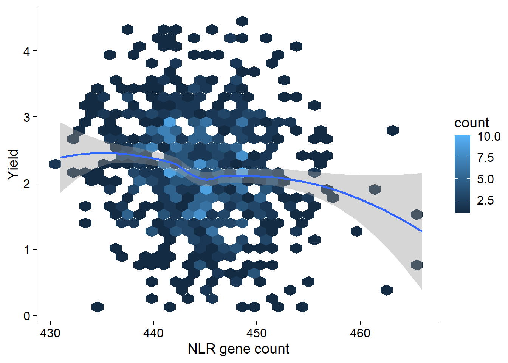
Protein
protein <- read_tsv('./data/protein_phenotype.txt')
protein_join <- left_join(nbs_res_tibb, protein, by=c('names'='Line')) %>% filter(!is.na(Protein))protein_join %>% ggplot(aes(x=presences, y=Protein)) + geom_hex() + geom_smooth() +
xlab('NLR gene count')
summary(lm(Protein ~ presences, data = protein_join))
Call:
lm(formula = Protein ~ presences, data = protein_join)
Residuals:
Min 1Q Median 3Q Max
-11.8479 -2.1274 -0.3336 1.9959 10.0949
Coefficients:
Estimate Std. Error t value Pr(>|t|)
(Intercept) -7.98158 7.24125 -1.102 0.271
presences 0.11786 0.01624 7.258 8.07e-13 ***
---
Signif. codes: 0 '***' 0.001 '**' 0.01 '*' 0.05 '.' 0.1 ' ' 1
Residual standard error: 3.106 on 960 degrees of freedom
Multiple R-squared: 0.05203, Adjusted R-squared: 0.05104
F-statistic: 52.69 on 1 and 960 DF, p-value: 8.075e-13Seed weight
Let’s look at seed weight:
seed_weight <- read_tsv('./data/Seed_weight_Phenotype.txt', col_names = c('names', 'wt'))
seed_join <- left_join(nbs_res_tibb, seed_weight) %>% filter(!is.na(wt))seed_join %>% filter(wt > 5) %>% ggplot(aes(x=presences, y=wt)) + geom_hex() + geom_smooth() +
ylab('Seed weight') +
xlab('NLR gene count')
summary(lm(wt ~ presences, data = seed_join))
Call:
lm(formula = wt ~ presences, data = seed_join)
Residuals:
Min 1Q Median 3Q Max
-12.2910 -2.8692 0.1462 2.7771 19.6962
Coefficients:
Estimate Std. Error t value Pr(>|t|)
(Intercept) 91.40656 14.67990 6.227 8.28e-10 ***
presences -0.17636 0.03298 -5.348 1.21e-07 ***
---
Signif. codes: 0 '***' 0.001 '**' 0.01 '*' 0.05 '.' 0.1 ' ' 1
Residual standard error: 4.714 on 690 degrees of freedom
Multiple R-squared: 0.0398, Adjusted R-squared: 0.0384
F-statistic: 28.6 on 1 and 690 DF, p-value: 1.213e-07Oil content
And now let’s look at the oil phenotype:
oil <- read_tsv('./data/oil_phenotype.txt')
oil_join <- left_join(nbs_res_tibb, oil, by=c('names'='Line')) %>% filter(!is.na(Oil))
oil_join# A tibble: 962 x 3
names presences Oil
<chr> <dbl> <dbl>
1 AB-01 445 17.6
2 AB-02 454 16.8
3 BR-24 455 20.6
4 ESS 454 20.9
5 For 448 21
6 HN001 448 23.6
7 HN002 444 18.5
8 HN003 446 17.5
9 HN004 442 18.9
10 HN005 440 15.5
# ... with 952 more rowsoil_join %>% ggplot(aes(x=presences, y=Oil)) + geom_hex() + geom_smooth() +
xlab('NLR gene count')
summary(lm(Oil ~ presences, data = oil_join))
Call:
lm(formula = Oil ~ presences, data = oil_join)
Residuals:
Min 1Q Median 3Q Max
-10.4376 -1.9081 0.4846 2.2401 9.0361
Coefficients:
Estimate Std. Error t value Pr(>|t|)
(Intercept) 118.03941 7.31646 16.13 <2e-16 ***
presences -0.22591 0.01641 -13.77 <2e-16 ***
---
Signif. codes: 0 '***' 0.001 '**' 0.01 '*' 0.05 '.' 0.1 ' ' 1
Residual standard error: 3.139 on 960 degrees of freedom
Multiple R-squared: 0.1649, Adjusted R-squared: 0.1641
F-statistic: 189.6 on 1 and 960 DF, p-value: < 2.2e-16OK there are many, many outliers here. Clearly I’ll have to do something fancier - for example, using the first two PCs as covariates might get rid of some of those outliers.
Boxplots per group
Yield
nbs_joined_groups %>%
filter(!is.na(Group)) %>%
inner_join(yield, by=c('names'='Line')) %>%
ggplot(aes(x=Group, y=Yield, fill = Group)) +
geom_boxplot() +
scale_fill_manual(values = col_list) +
theme_minimal_hgrid() +
theme(axis.text.x = element_text(size=12),
axis.text.y = element_text(size=12)) +
geom_signif(comparisons = list(c('Old cultivar', 'Modern cultivar')),
map_signif_level = T) +
guides(fill=FALSE) +
ylab('Protein') +
xlab('Accession group')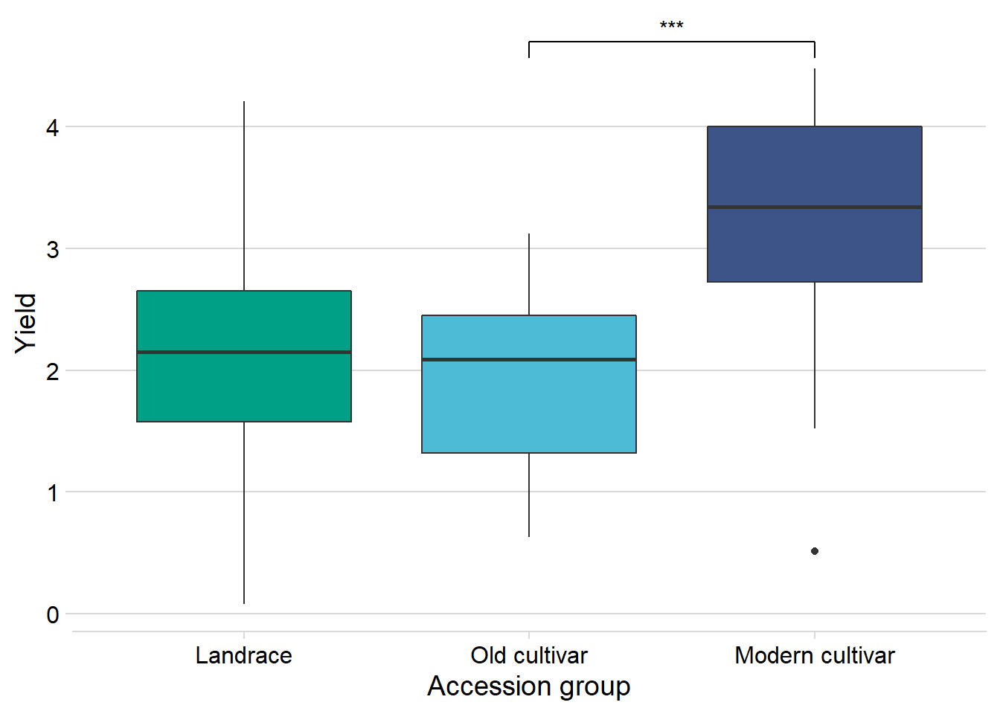
And let’s check the dots:
nbs_joined_groups %>%
filter(!is.na(Group)) %>%
inner_join(yield_join, by = 'names') %>%
ggplot(aes(y=presences.x, x=Yield, color=Group)) +
geom_point() +
scale_color_manual(values = col_list) +
theme_minimal_hgrid() +
theme(axis.text.x = element_text(size=12),
axis.text.y = element_text(size=12)) +
ylab('NLR gene count')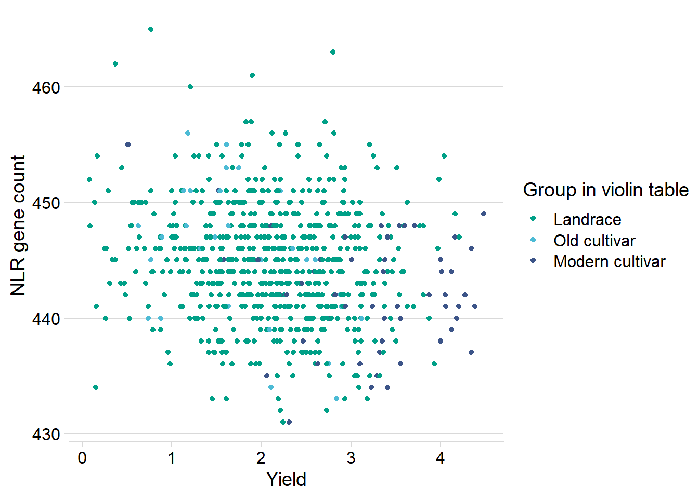
nbs_joined_groups %>%
filter(!is.na(Group)) %>%
inner_join(yield_join, by = 'names') %>%
filter(Group != 'Landrace') %>%
ggplot(aes(x=presences.x, y=Yield, color=Group)) +
geom_point() +
scale_color_manual(values = col_list) +
theme_minimal_hgrid() +
geom_smooth() +
theme(axis.text.x = element_text(size=12),
axis.text.y = element_text(size=12)) +
xlab('NLR gene count')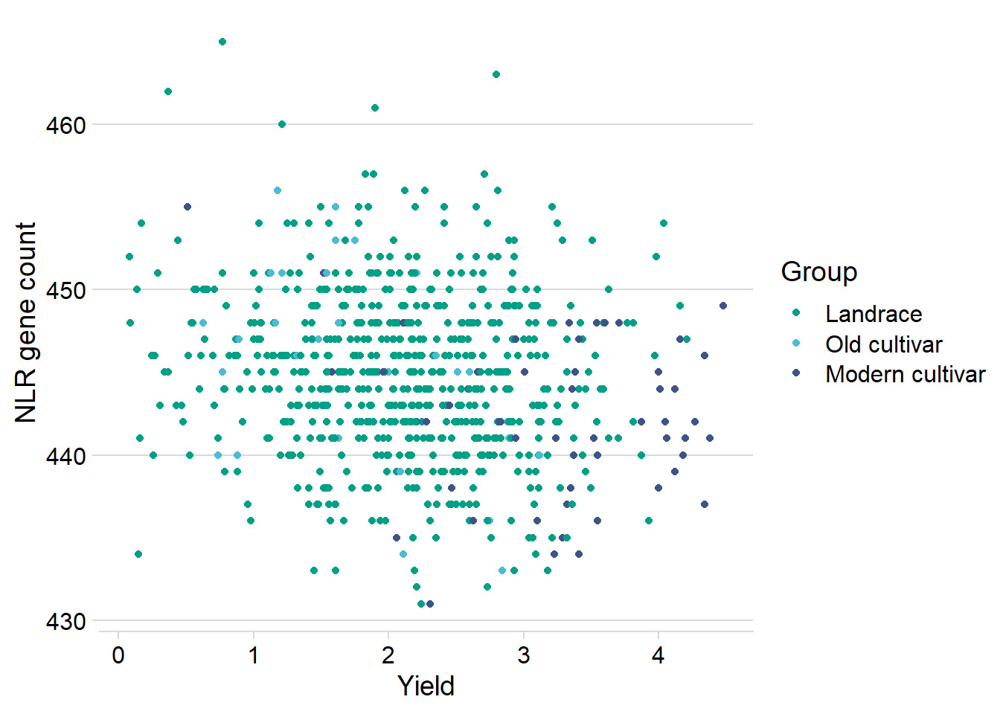 ## Protein
protein vs. the four groups:
nbs_joined_groups %>%
filter(!is.na(Group)) %>%
inner_join(protein, by=c('names'='Line')) %>%
ggplot(aes(x=Group, y=Protein, fill = Group)) +
geom_boxplot() +
scale_fill_manual(values = col_list) +
theme_minimal_hgrid() +
theme(axis.text.x = element_text(size=12),
axis.text.y = element_text(size=12)) +
geom_signif(comparisons = list(c('Wild', 'Landrace'),
c('Old cultivar', 'Modern cultivar')),
map_signif_level = T) +
guides(fill=FALSE) +
ylab('Protein') +
xlab('Accession group')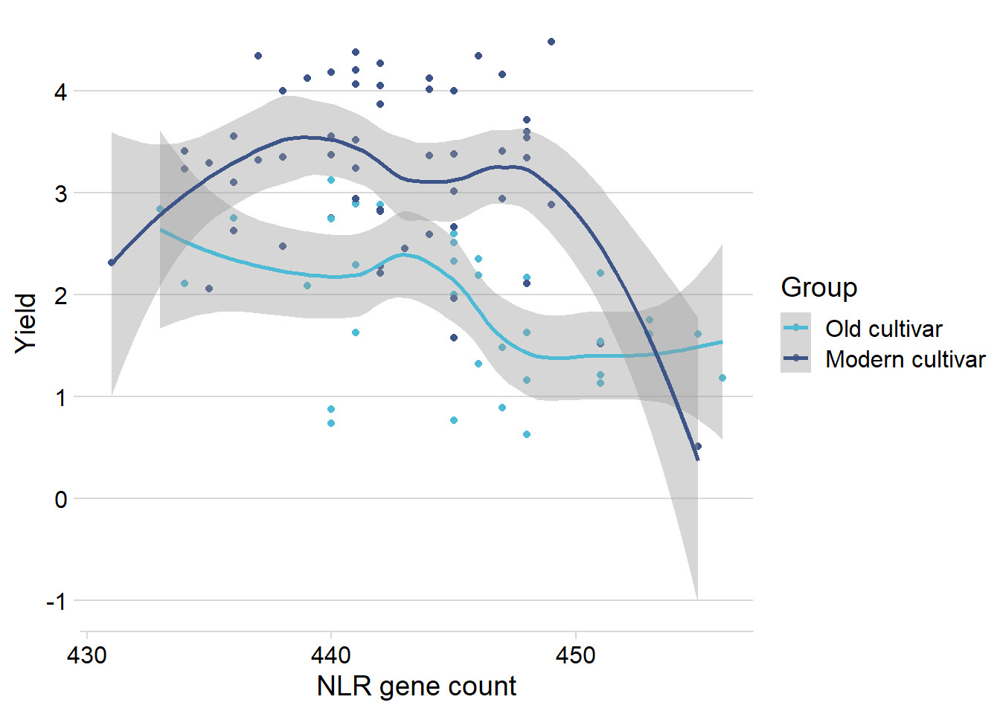
Seed weight
And seed weight:
nbs_joined_groups %>%
filter(!is.na(Group)) %>%
inner_join(seed_join) %>%
ggplot(aes(x=Group, y=wt, fill = Group)) +
geom_boxplot() +
scale_fill_manual(values = col_list) +
theme_minimal_hgrid() +
theme(axis.text.x = element_text(size=12),
axis.text.y = element_text(size=12)) +
geom_signif(comparisons = list(c('Wild', 'Landrace'),
c('Old cultivar', 'Modern cultivar')),
map_signif_level = T) +
guides(fill=FALSE) +
ylab('Seed weight') +
xlab('Accession group')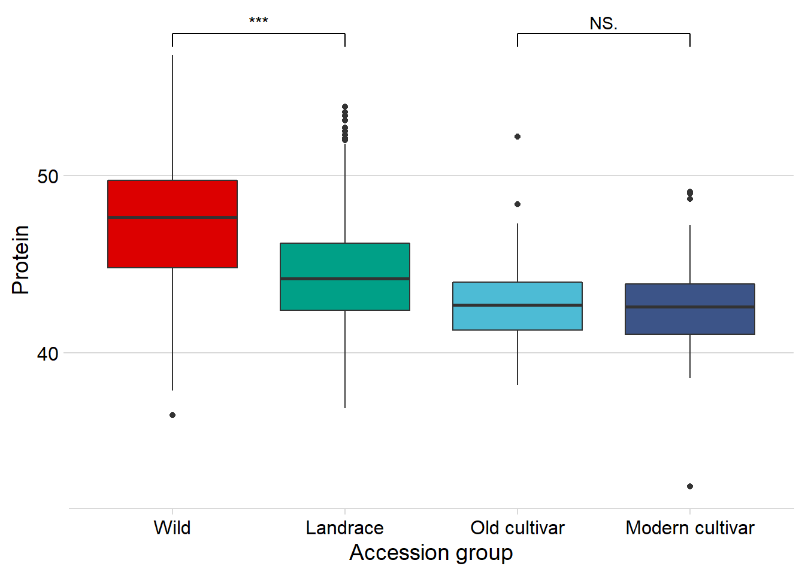
Wow, that’s breeding!
Oil content
And finally, Oil content:
nbs_joined_groups %>%
filter(!is.na(Group)) %>%
inner_join(oil_join, by = 'names') %>%
ggplot(aes(x=Group, y=Oil, fill = Group)) +
geom_boxplot() +
scale_fill_manual(values = col_list) +
theme_minimal_hgrid() +
theme(axis.text.x = element_text(size=12),
axis.text.y = element_text(size=12)) +
geom_signif(comparisons = list(c('Wild', 'Landrace'),
c('Old cultivar', 'Modern cultivar')),
map_signif_level = T) +
guides(fill=FALSE) +
ylab('Oil content') +
xlab('Accession group')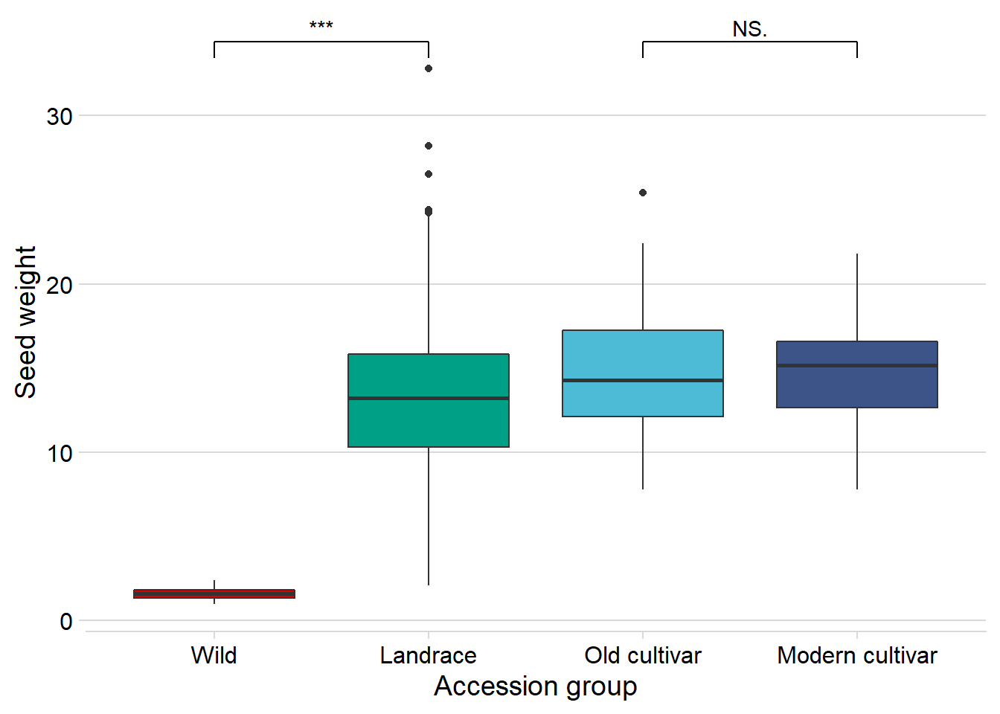
Oha, a single star. That’s p < 0.05!
Let’s redo the above hexplot, but also color the dots by group.
nbs_joined_groups %>%
filter(!is.na(Group)) %>%
inner_join(oil_join, by = 'names') %>%
ggplot(aes(x=presences.x, y=Oil, color=Group)) +
geom_point() +
scale_color_manual(values = col_list) +
theme_minimal_hgrid() +
theme(axis.text.x = element_text(size=12),
axis.text.y = element_text(size=12)) +
xlab('NLR gene count')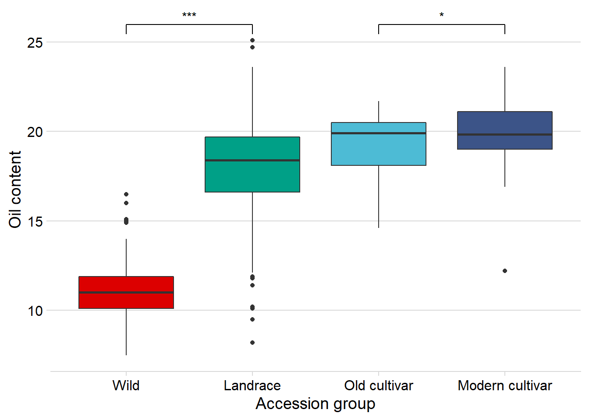
Oha, so it’s the Wilds that drag this out a lot.
Let’s remove them and see what it looks like:
nbs_joined_groups %>%
filter(!is.na(Group)) %>%
inner_join(oil_join, by = 'names') %>%
filter(Group %in% c('Old cultivar', 'Modern cultivar')) %>%
ggplot(aes(x=presences.x, y=Oil, color=Group)) +
geom_point() +
scale_color_manual(values = col_list) +
theme_minimal_hgrid() +
theme(axis.text.x = element_text(size=12),
axis.text.y = element_text(size=12)) +
xlab('NLR gene count') +
geom_smooth()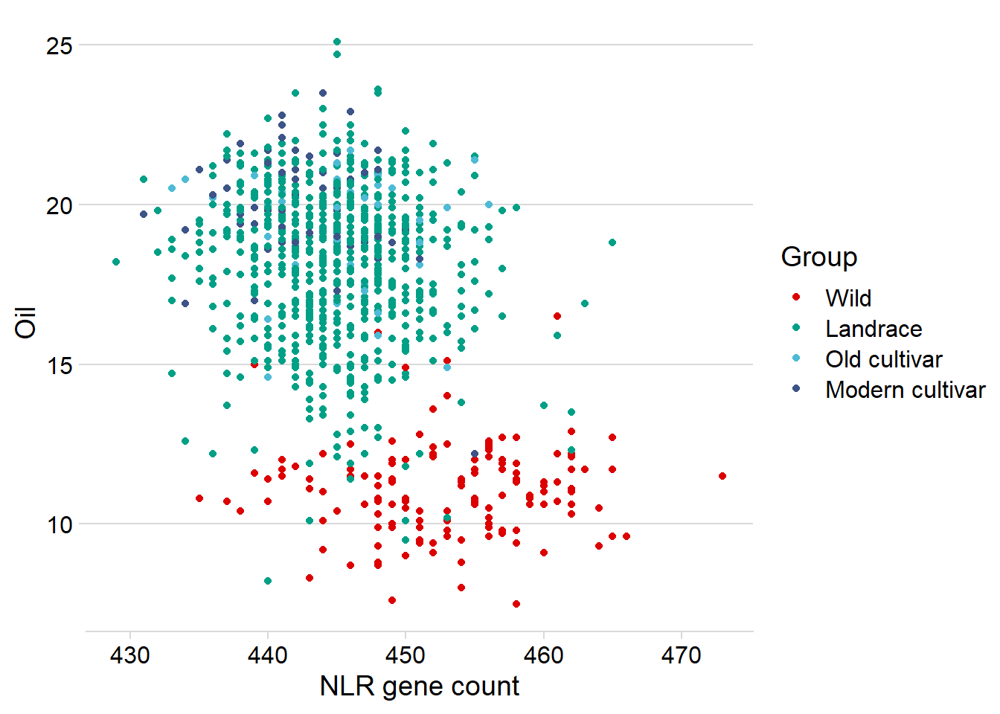
Let’s remove that one outlier:
nbs_joined_groups %>%
filter(!is.na(Group)) %>%
inner_join(oil_join, by = 'names') %>%
filter(Group %in% c('Old cultivar', 'Modern cultivar')) %>%
filter(Oil > 13) %>%
ggplot(aes(x=presences.x, y=Oil, color=Group)) +
geom_point() +
scale_color_manual(values = col_list) +
theme_minimal_hgrid() +
theme(axis.text.x = element_text(size=12),
axis.text.y = element_text(size=12)) +
xlab('NLR gene count') +
geom_smooth()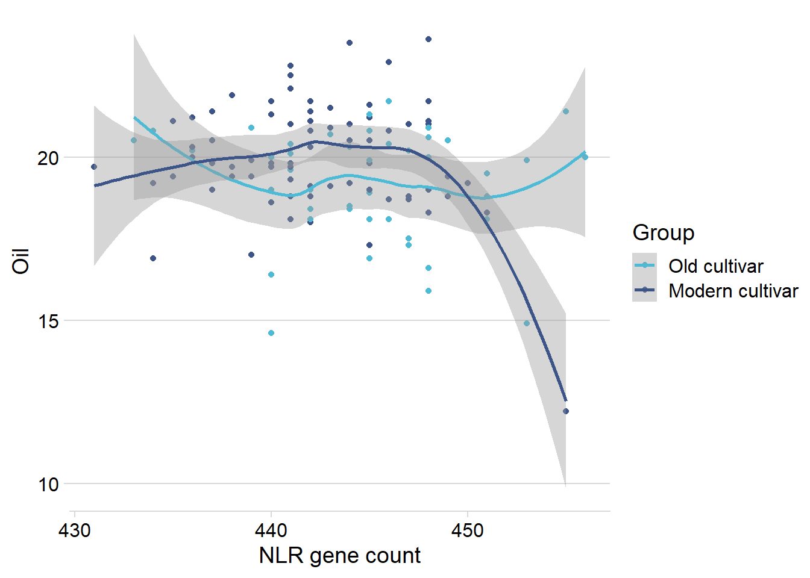
Does the above oil content boxplot become different if we exclude the one outlier? I’d bet so
nbs_joined_groups %>%
filter(!is.na(Group)) %>%
inner_join(oil_join, by = 'names') %>%
filter(names != 'USB-393') %>%
ggplot(aes(x=Group, y=Oil, fill = Group)) +
geom_boxplot() +
scale_fill_manual(values = col_list) +
theme_minimal_hgrid() +
theme(axis.text.x = element_text(size=12),
axis.text.y = element_text(size=12)) +
geom_signif(comparisons = list(c('Wild', 'Landrace'),
c('Old cultivar', 'Modern cultivar')),
map_signif_level = T) +
guides(fill=FALSE) +
ylab('Oil content') +
xlab('Accession group')Nope, still significantly higher in modern cultivars!
Mixed modeling
Alright here’s my hypothesis: There’s a link between cultivar status (Old, Wild, Landrace, Modern), r-gene count, and yield, but it’s ‘hidden’ by country differences.
Great tutorial here: https://ourcodingclub.github.io/tutorials/mixed-models
So we’ll have to build some lme4 models!
Oil
nbs_joined_groups$presences2 <- scale(nbs_joined_groups$presences, center=T, scale=T)
hist(nbs_joined_groups$presences2)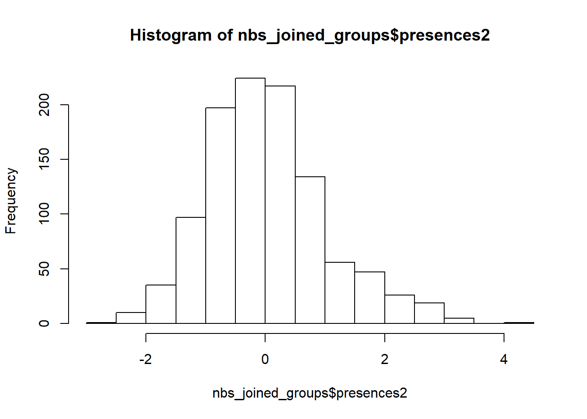
oil_nbs_joined_groups <- nbs_joined_groups %>% inner_join(oil_join, by = 'names')
oil_nbs_joined_groups$Oil2 <- scale(oil_nbs_joined_groups$Oil, center=T, scale=T)basic.lm <- lm(Oil2 ~ presences2, data=oil_nbs_joined_groups)ggplot(oil_nbs_joined_groups, aes(x = presences2, y = Oil2)) +
geom_point() +
geom_smooth(method = "lm")
Hm looks messy, you can see two groups
plot(basic.lm, which = 1)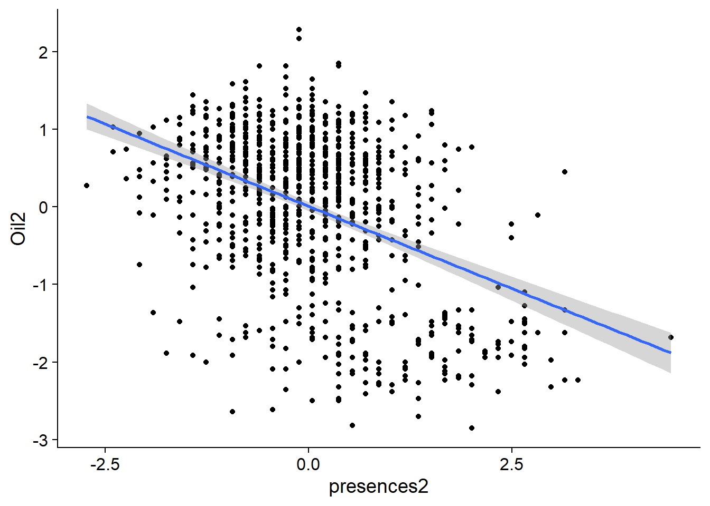
which is confirmed by the messy line
plot(basic.lm, which = 2)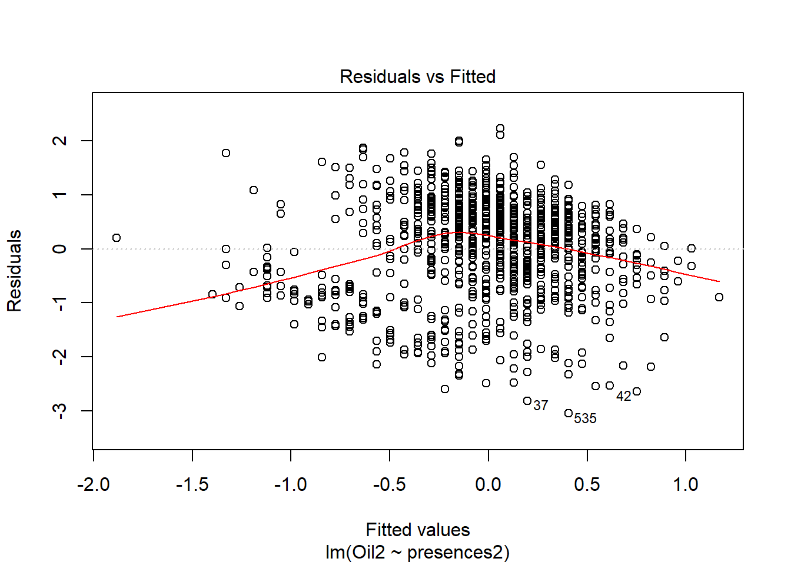
and this garbage qqplot.
So let’s build an lmer model!
mixed.lmer <- lmer(Oil2 ~ presences2 + (1|Group), data=oil_nbs_joined_groups)
summary(mixed.lmer)Linear mixed model fit by REML. t-tests use Satterthwaite's method [
lmerModLmerTest]
Formula: Oil2 ~ presences2 + (1 | Group)
Data: oil_nbs_joined_groups
REML criterion at convergence: 1872.4
Scaled residuals:
Min 1Q Median 3Q Max
-4.5879 -0.5672 0.0869 0.6631 3.2111
Random effects:
Groups Name Variance Std.Dev.
Group (Intercept) 1.3349 1.1554
Residual 0.4075 0.6384
Number of obs: 951, groups: Group, 4
Fixed effects:
Estimate Std. Error df t value Pr(>|t|)
(Intercept) -0.04360 0.57867 2.99844 -0.075 0.9447
presences2 -0.05350 0.02394 947.27006 -2.234 0.0257 *
---
Signif. codes: 0 '***' 0.001 '**' 0.01 '*' 0.05 '.' 0.1 ' ' 1
Correlation of Fixed Effects:
(Intr)
presences2 -0.004So the Variance for Group is 1.3349, that means it’s 1.3349/(1.3349+0.4075) *100 = 76% of the variance is explained by the four groups!
plot(mixed.lmer)
qqnorm(resid(mixed.lmer))
qqline(resid(mixed.lmer))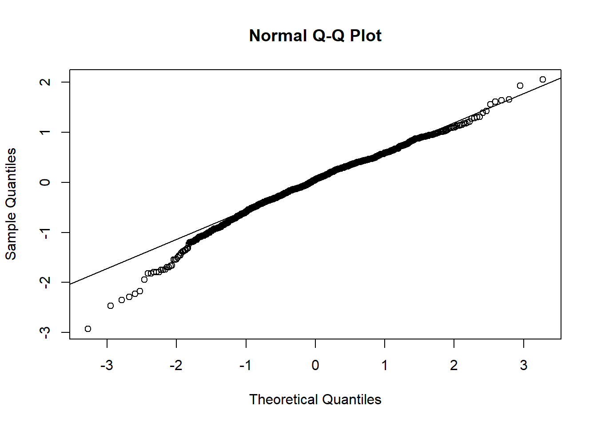
These still look fairly bad - better than before, but the QQ plot still isn’t on the line.
Let’s quickly check yield too
Yield
yield_nbs_joined_groups <- nbs_joined_groups %>% inner_join(yield_join, by = 'names')
yield_nbs_joined_groups$Yield2 <-scale(yield_nbs_joined_groups$Yield, center=T, scale=T)mixed.lmer <- lmer(Yield2 ~ presences2 + (1|Group), data=yield_nbs_joined_groups)
summary(mixed.lmer)Linear mixed model fit by REML. t-tests use Satterthwaite's method [
lmerModLmerTest]
Formula: Yield2 ~ presences2 + (1 | Group)
Data: yield_nbs_joined_groups
REML criterion at convergence: 2060.4
Scaled residuals:
Min 1Q Median 3Q Max
-3.1643 -0.6819 0.0316 0.6948 2.8002
Random effects:
Groups Name Variance Std.Dev.
Group (Intercept) 0.6466 0.8041
Residual 0.8600 0.9274
Number of obs: 761, groups: Group, 3
Fixed effects:
Estimate Std. Error df t value Pr(>|t|)
(Intercept) 0.23641 0.46910 1.98335 0.504 0.664692
presences2 -0.15364 0.04172 757.46580 -3.683 0.000247 ***
---
Signif. codes: 0 '***' 0.001 '**' 0.01 '*' 0.05 '.' 0.1 ' ' 1
Correlation of Fixed Effects:
(Intr)
presences2 0.025 Percentage explained by breeding group: 0.6466 / (0.6466+0.8600)*100 = 42%
plot(mixed.lmer)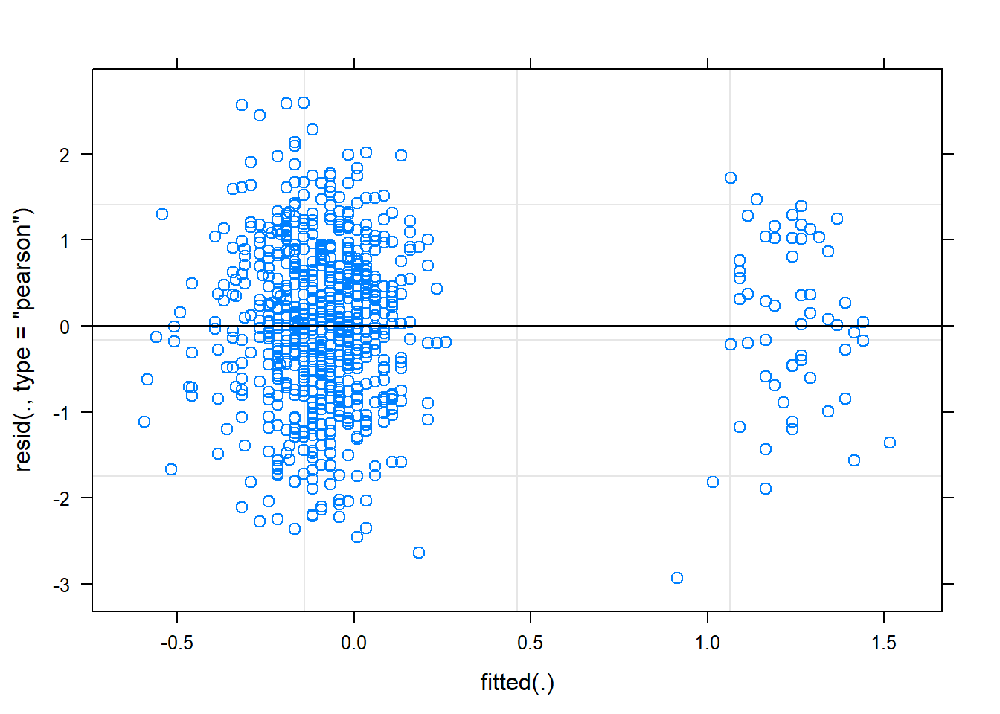
qqnorm(resid(mixed.lmer))
qqline(resid(mixed.lmer))
:O
p-value of 0.000247 for the normalised presences while accounting for the breeding group, that’s beautiful.
ggplot(yield_nbs_joined_groups, aes(x = presences2, y = Yield2)) +
facet_wrap(~Group, nrow=1) + # a panel for each mountain range
geom_point(alpha = 0.5) +
theme_classic() +
geom_line(data = cbind(yield_nbs_joined_groups, pred = predict(mixed.lmer)), aes(y = pred), size = 1) +
theme_minimal_hgrid() +
theme(legend.position = "none") +
xlab('Scaled and centered NLR gene count') +
ylab('Scaled and centered yield') +
scale_color_manual(values=as.vector(isol(40)))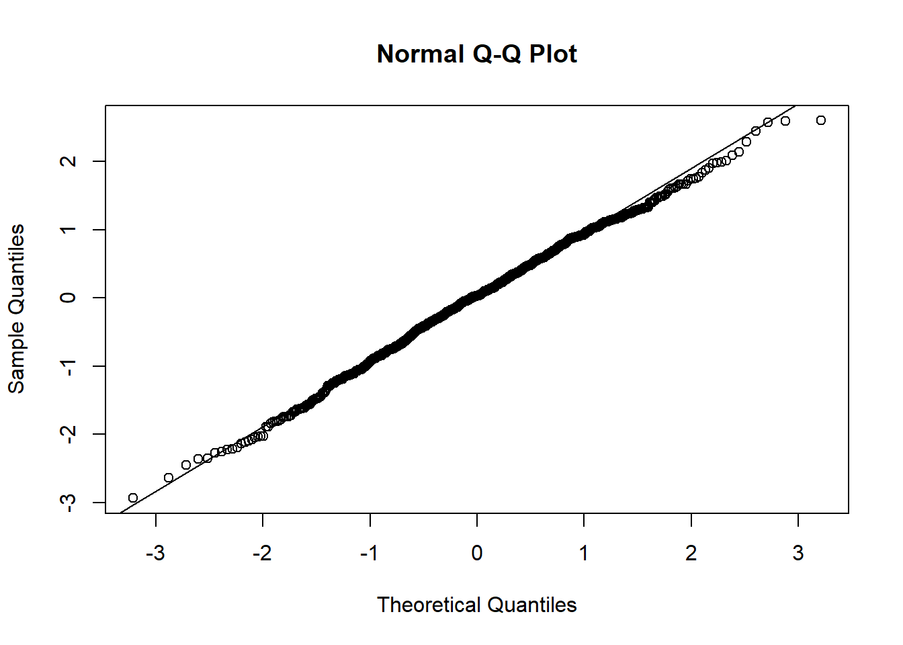
Making the breeding group fixed
We have < 10 possible factors in the group, so making that fixed instead of random
# this doesn't work because you need at least one random effect
# mixed.lmer <- lmer(Yield2 ~ presences2 + Group, data=yield_nbs_joined_groups)Adding country
We should also add the country the plant is from as a random effect, that definitely has an influence too (perhaps a stronger one???)
Yield
country <- read_csv('./data/Cultivar_vs_country.csv')
names(country) <- c('names', 'PI-ID', 'Country')
yield_country_nbs_joined_groups <- yield_nbs_joined_groups %>% inner_join(country)mixed.lmer <- lmer(Yield2 ~ presences2 + (1|Group) + (1|Country), data=yield_country_nbs_joined_groups)
summary(mixed.lmer)Linear mixed model fit by REML. t-tests use Satterthwaite's method [
lmerModLmerTest]
Formula: Yield2 ~ presences2 + (1 | Group) + (1 | Country)
Data: yield_country_nbs_joined_groups
REML criterion at convergence: 1957
Scaled residuals:
Min 1Q Median 3Q Max
-3.09429 -0.56737 0.03072 0.65680 2.89981
Random effects:
Groups Name Variance Std.Dev.
Country (Intercept) 0.3807 0.6170
Group (Intercept) 0.4178 0.6464
Residual 0.7614 0.8726
Number of obs: 741, groups: Country, 40; Group, 3
Fixed effects:
Estimate Std. Error df t value Pr(>|t|)
(Intercept) 0.07150 0.40194 2.28533 0.178 0.87336
presences2 -0.11258 0.04116 726.98206 -2.735 0.00639 **
---
Signif. codes: 0 '***' 0.001 '**' 0.01 '*' 0.05 '.' 0.1 ' ' 1
Correlation of Fixed Effects:
(Intr)
presences2 0.051 Nice! Yield is negatively correlated with the number of NLR genes when accounting for breeding group AND country
ggplot(yield_country_nbs_joined_groups, aes(x = presences2, y = Yield2, colour = Country)) +
facet_wrap(~Group, nrow=1) + # a panel for each mountain range
geom_point(alpha = 0.5) +
theme_classic() +
geom_line(data = cbind(yield_country_nbs_joined_groups, pred = predict(mixed.lmer)), aes(y = pred), size = 1) +
theme_minimal_hgrid() +
theme(legend.position = "none") +
xlab('Scaled and centered NLR gene count') +
ylab('Scaled and centered yield') +
scale_color_manual(values=as.vector(isol(40)))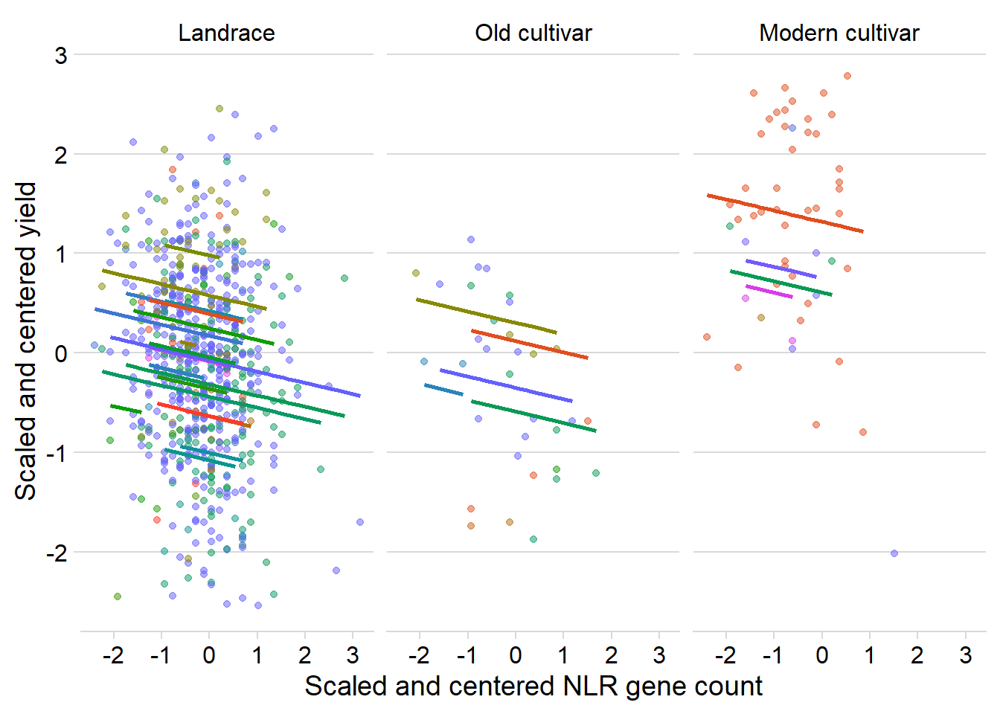
Some diagnostics:
plot(mixed.lmer)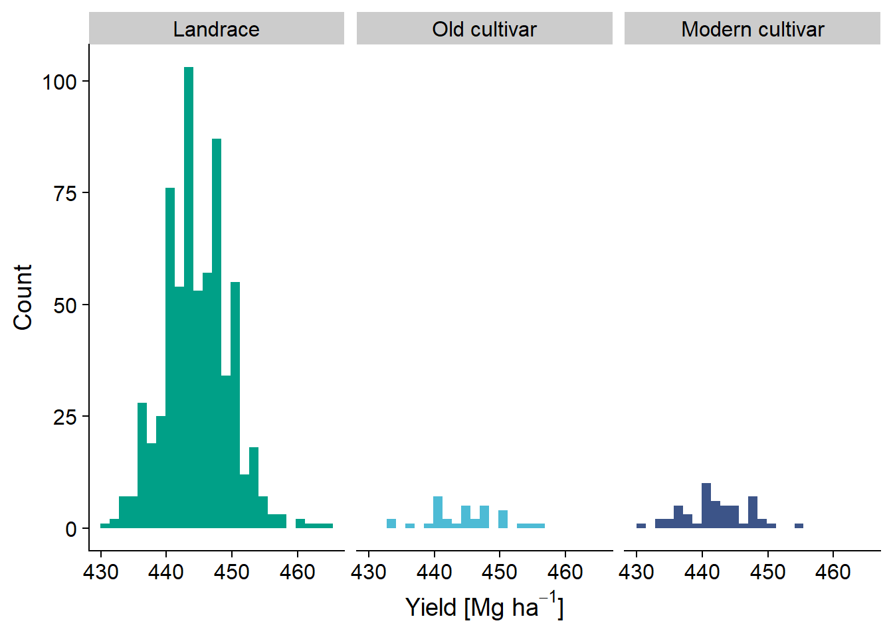
qqnorm(resid(mixed.lmer))
qqline(resid(mixed.lmer))Hm, the qqplot looks slightly worse than when I use maturity group alone, interesting!
BIG DISCLAIMER: Currently, I treat country and group not as nested variables, they’re independent. I think that is the way it should be in this case but I’m thinking.
Making the breeding group fixed
Since we have too few factors in the breeding groups we have to make that fixed, not random
mixed.lmer <- lmer(Yield2 ~ presences2 + Group + (1|Country), data=yield_country_nbs_joined_groups)
summary(mixed.lmer)Linear mixed model fit by REML. t-tests use Satterthwaite's method [
lmerModLmerTest]
Formula: Yield2 ~ presences2 + Group + (1 | Country)
Data: yield_country_nbs_joined_groups
REML criterion at convergence: 1951.8
Scaled residuals:
Min 1Q Median 3Q Max
-3.1864 -0.5700 0.0305 0.6525 2.8982
Random effects:
Groups Name Variance Std.Dev.
Country (Intercept) 0.3776 0.6145
Residual 0.7616 0.8727
Number of obs: 741, groups: Country, 40
Fixed effects:
Estimate Std. Error df t value Pr(>|t|)
(Intercept) -0.15265 0.13488 33.06645 -1.132 0.26588
presences2 -0.11149 0.04117 726.45969 -2.708 0.00693 **
GroupOld cultivar -0.29578 0.16164 734.95182 -1.830 0.06768 .
GroupModern cultivar 1.00458 0.22335 360.40725 4.498 9.28e-06 ***
---
Signif. codes: 0 '***' 0.001 '**' 0.01 '*' 0.05 '.' 0.1 ' ' 1
Correlation of Fixed Effects:
(Intr) prsnc2 GrpOlc
presences2 0.119
GrpOldcltvr -0.112 -0.008
GrpMdrncltv -0.194 0.065 0.156Non-normalised yield
Let’s see whether the ‘raw’ values perform the same.
mixed.lmer <- lmer(Yield ~ presences.x + (1|Group) + (1|Country), data=yield_country_nbs_joined_groups)
summary(mixed.lmer)Linear mixed model fit by REML. t-tests use Satterthwaite's method [
lmerModLmerTest]
Formula: Yield ~ presences.x + (1 | Group) + (1 | Country)
Data: yield_country_nbs_joined_groups
REML criterion at convergence: 1679.6
Scaled residuals:
Min 1Q Median 3Q Max
-3.09429 -0.56737 0.03072 0.65680 2.89981
Random effects:
Groups Name Variance Std.Dev.
Country (Intercept) 0.2602 0.5101
Group (Intercept) 0.2856 0.5345
Residual 0.5205 0.7215
Number of obs: 741, groups: Country, 40; Group, 3
Fixed effects:
Estimate Std. Error df t value Pr(>|t|)
(Intercept) 9.011013 2.481360 677.994843 3.631 0.000303 ***
presences.x -0.015192 0.005555 726.982171 -2.735 0.006389 **
---
Signif. codes: 0 '***' 0.001 '**' 0.01 '*' 0.05 '.' 0.1 ' ' 1
Correlation of Fixed Effects:
(Intr)
presences.x -0.991Oh, lower p-values for the intercept
ggplot(yield_country_nbs_joined_groups, aes(x = presences.x, y = Yield, colour = Country)) +
facet_wrap(~Group, nrow=1) + # a panel for each mountain range
geom_point(alpha = 0.5) +
theme_classic() +
geom_line(data = cbind(yield_country_nbs_joined_groups, pred = predict(mixed.lmer)), aes(y = pred), size = 1) +
theme_minimal_hgrid() +
theme(legend.position = "none") +
xlab('NLR gene count') +
ylab('Yield') +
scale_color_manual(values=as.vector(isol(40)))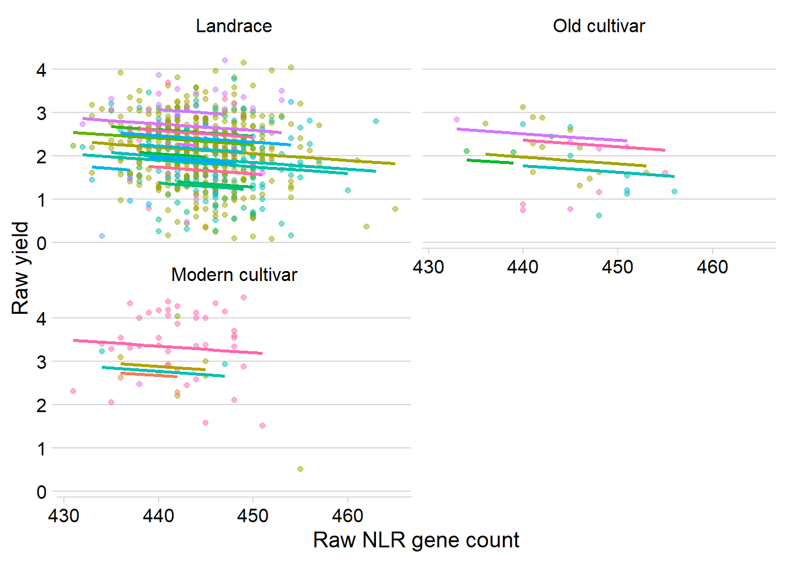
plot(mixed.lmer)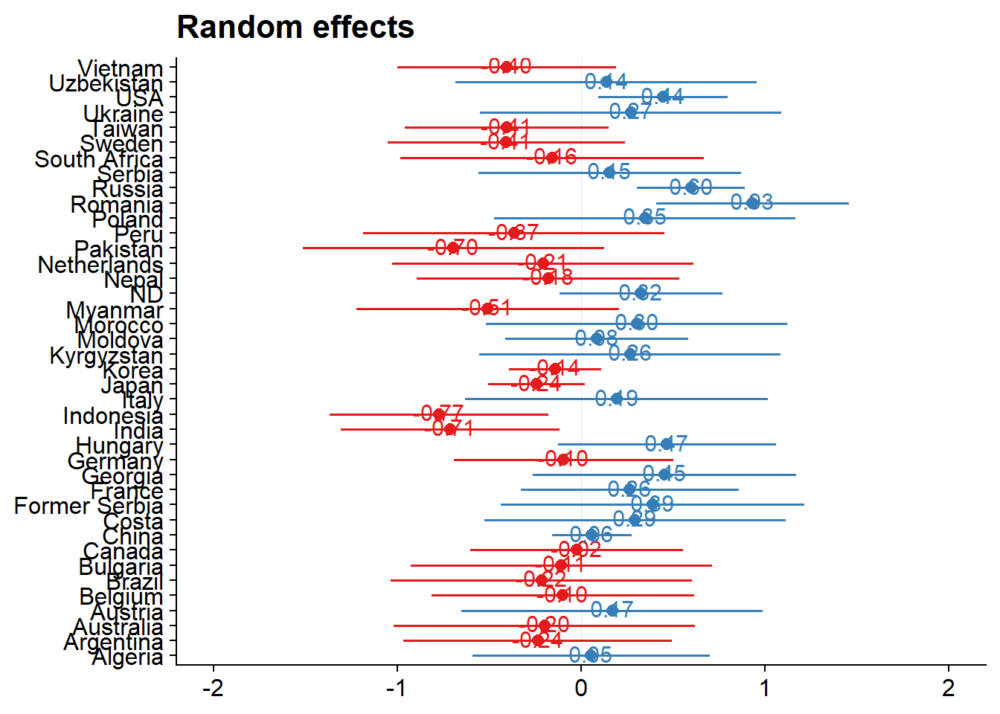
qqnorm(resid(mixed.lmer))
qqline(resid(mixed.lmer))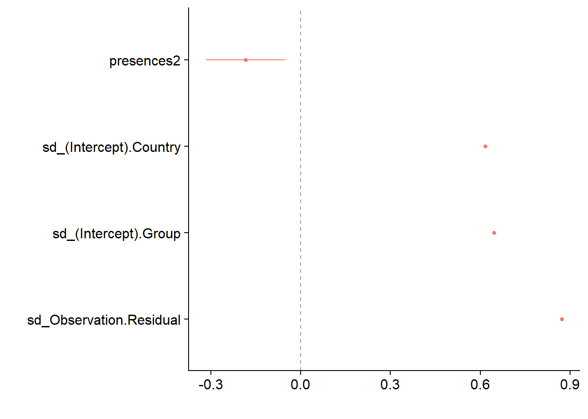
Making the breeding group fixed
mixed.lmer <- lmer(Yield ~ presences.x + Group + (1|Country), data=yield_country_nbs_joined_groups)
summary(mixed.lmer)Linear mixed model fit by REML. t-tests use Satterthwaite's method [
lmerModLmerTest]
Formula: Yield ~ presences.x + Group + (1 | Country)
Data: yield_country_nbs_joined_groups
REML criterion at convergence: 1675.1
Scaled residuals:
Min 1Q Median 3Q Max
-3.1864 -0.5700 0.0305 0.6525 2.8982
Random effects:
Groups Name Variance Std.Dev.
Country (Intercept) 0.2581 0.5081
Residual 0.5206 0.7216
Number of obs: 741, groups: Country, 40
Fixed effects:
Estimate Std. Error df t value Pr(>|t|)
(Intercept) 8.760056 2.465570 726.660933 3.553 0.000406 ***
presences.x -0.015045 0.005556 726.459065 -2.708 0.006929 **
GroupOld cultivar -0.244554 0.133648 734.951816 -1.830 0.067680 .
GroupModern cultivar 0.830604 0.184672 360.407255 4.498 9.28e-06 ***
---
Signif. codes: 0 '***' 0.001 '**' 0.01 '*' 0.05 '.' 0.1 ' ' 1
Correlation of Fixed Effects:
(Intr) prsnc. GrpOlc
presences.x -0.999
GrpOldcltvr 0.003 -0.008
GrpMdrncltv -0.074 0.065 0.156Oh, lower p-values for the intercept
ggplot(yield_country_nbs_joined_groups, aes(x = presences.x, y = Yield, colour = Country)) +
facet_wrap(~Group, nrow=1) + # a panel for each mountain range
geom_point(alpha = 0.5) +
theme_classic() +
geom_line(data = cbind(yield_country_nbs_joined_groups, pred = predict(mixed.lmer)), aes(y = pred), size = 1) +
theme_minimal_hgrid() +
theme(legend.position = "none") +
xlab('NLR gene count') +
ylab('Yield') +
scale_color_manual(values=as.vector(isol(40)))plot(mixed.lmer)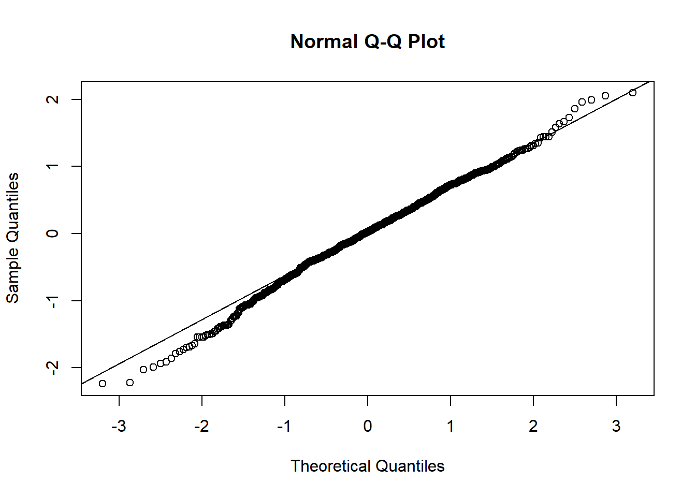
qqnorm(resid(mixed.lmer))
qqline(resid(mixed.lmer))plot(resid(mixed.lmer))These are the final numbers for the paper.
Plotting effect of each covariate
(re.effects <- plot_model(mixed.lmer, type = "re", show.values = TRUE))#lmerTest breaks these other packages so I better unload it and reload only lme4
detach("package:lmerTest", unload=TRUE)
yield_country_nbs_joined_groups_renamed <- yield_country_nbs_joined_groups
names(yield_country_nbs_joined_groups_renamed) <- c('names', 'presences.x', 'PI-ID', 'Group', 'presences2', 'presences.y', 'Yield', 'Yield2', 'Country')
mixed.lmer <- lmer(Yield2 ~ presences2 + Group + (1|Country), data=yield_country_nbs_joined_groups_renamed)
dwplot(mixed.lmer,
vline = geom_vline(xintercept = 0, colour = "grey60", linetype = 2))library(stargazer)
stargazer(mixed.lmer, type = "text",
digits = 3,
star.cutoffs = c(0.05, 0.01, 0.001),
digit.separator = "")
==================================================
Dependent variable:
-----------------------------
Yield2
--------------------------------------------------
presences2 -0.111**
(0.041)
GroupOld cultivar -0.296
(0.162)
GroupModern cultivar 1.005***
(0.223)
Constant -0.153
(0.135)
--------------------------------------------------
Observations 741
Log Likelihood -975.906
Akaike Inf. Crit. 1963.812
Bayesian Inf. Crit. 1991.460
==================================================
Note: *p<0.05; **p<0.01; ***p<0.001library(ggeffects)
ggpredict(mixed.lmer, terms = c("presences2", 'Group'), type = "re") %>%
plot() +
theme_minimal()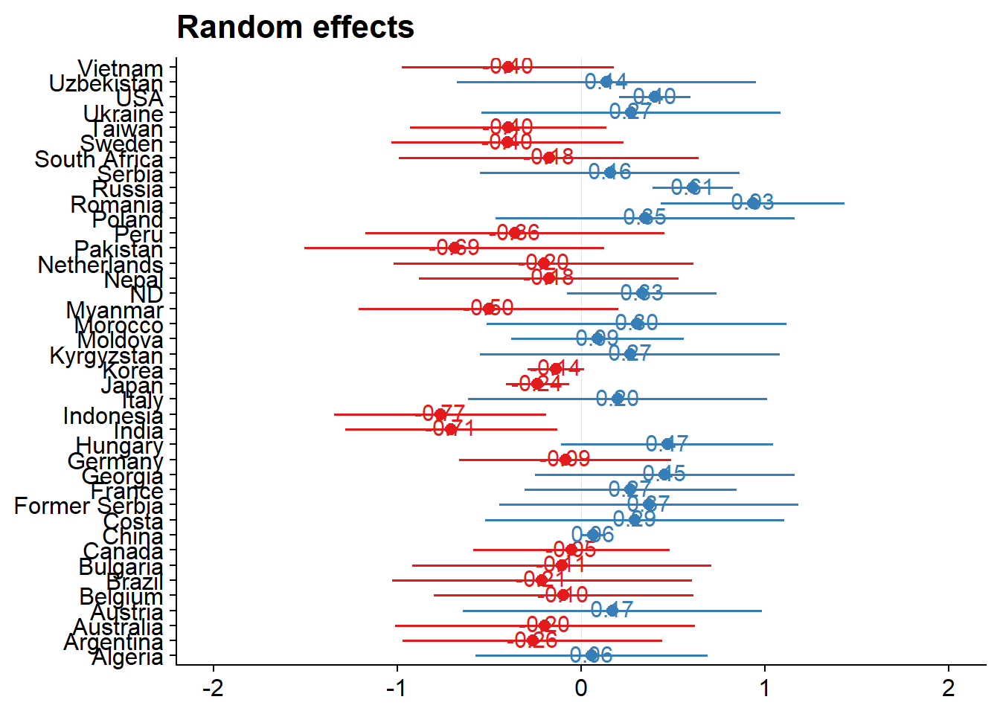 Let’s also plot that for non-normalised data
mixed.lmer <- lmer(Yield ~ presences.x + Group + (1|Country), data=yield_country_nbs_joined_groups_renamed)
ggpredict(mixed.lmer, terms = c("presences.x", 'Group'), type = "re") %>%
plot() +
theme_minimal_hgrid() +
xlab('NLR count') +
ylab('Yield')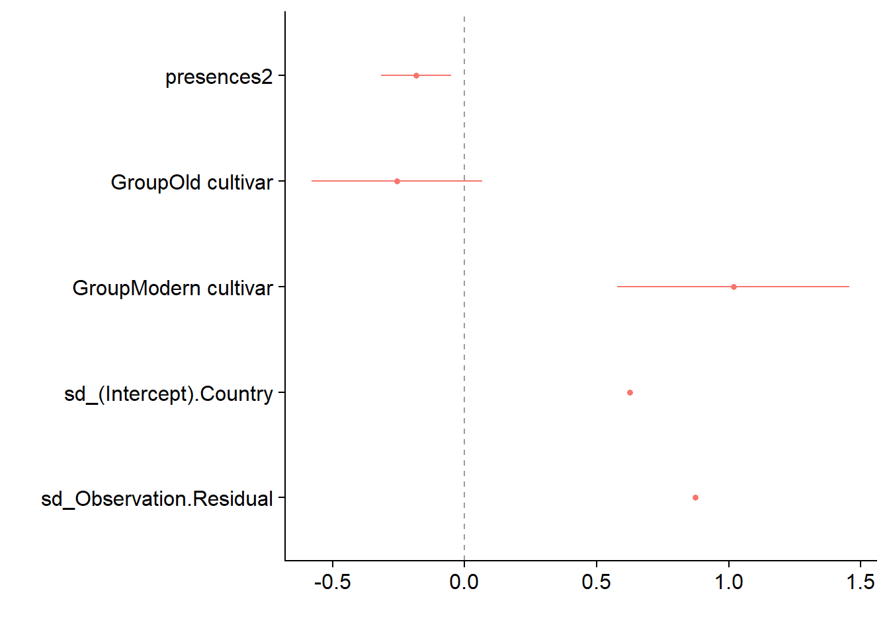
# alright back to regular programming
library(lmerTest)
mixed.lmer <- lmer(Yield2 ~ presences2 + Group + (1|Country), data=yield_country_nbs_joined_groups)More complex models
If I add random slopes to either groups not much changes, I do get warnings indicating that there’s not much in the data:
mixed.lmer <- lmer(Yield2 ~ presences2 + (presences2|Group) + (1|Country), data=yield_country_nbs_joined_groups)
summary(mixed.lmer)Linear mixed model fit by REML. t-tests use Satterthwaite's method [
lmerModLmerTest]
Formula: Yield2 ~ presences2 + (presences2 | Group) + (1 | Country)
Data: yield_country_nbs_joined_groups
REML criterion at convergence: 1954.8
Scaled residuals:
Min 1Q Median 3Q Max
-3.09789 -0.56422 0.04471 0.67067 2.88976
Random effects:
Groups Name Variance Std.Dev. Corr
Country (Intercept) 0.3920 0.6261
Group (Intercept) 0.3858 0.6211
presences2 0.0310 0.1761 0.30
Residual 0.7564 0.8697
Number of obs: 741, groups: Country, 40; Group, 3
Fixed effects:
Estimate Std. Error df t value Pr(>|t|)
(Intercept) 0.02964 0.38964 2.29148 0.076 0.945
presences2 -0.22515 0.12370 1.66243 -1.820 0.235
Correlation of Fixed Effects:
(Intr)
presences2 0.269 mixed.lmer <- lmer(Yield2 ~ presences2 + Group + (1 + presences2|Country), data=yield_country_nbs_joined_groups)
summary(mixed.lmer)Linear mixed model fit by REML. t-tests use Satterthwaite's method [
lmerModLmerTest]
Formula: Yield2 ~ presences2 + Group + (1 + presences2 | Country)
Data: yield_country_nbs_joined_groups
REML criterion at convergence: 1951.5
Scaled residuals:
Min 1Q Median 3Q Max
-3.1904 -0.5715 0.0314 0.6551 2.9003
Random effects:
Groups Name Variance Std.Dev. Corr
Country (Intercept) 0.397511 0.63048
presences2 0.002137 0.04623 1.00
Residual 0.761491 0.87263
Number of obs: 741, groups: Country, 40
Fixed effects:
Estimate Std. Error df t value Pr(>|t|)
(Intercept) -0.1470 0.1387 28.1820 -1.060 0.2982
presences2 -0.1162 0.0430 30.8335 -2.702 0.0111 *
GroupOld cultivar -0.3010 0.1615 733.1173 -1.863 0.0628 .
GroupModern cultivar 1.0093 0.2192 166.8461 4.605 8.15e-06 ***
---
Signif. codes: 0 '***' 0.001 '**' 0.01 '*' 0.05 '.' 0.1 ' ' 1
Correlation of Fixed Effects:
(Intr) prsnc2 GrpOlc
presences2 0.334
GrpOldcltvr -0.109 -0.017
GrpMdrncltv -0.188 0.044 0.158
convergence code: 0
boundary (singular) fit: see ?isSingularOh, a significant p-value, let’s plot plot that and compare with he previous plot:
ggplot(yield_country_nbs_joined_groups, aes(x = presences2, y = Yield2, colour = Country)) +
facet_wrap(~Group, nrow=1) + # a panel for each mountain range
geom_point(alpha = 0.5) +
theme_classic() +
geom_line(data = cbind(yield_country_nbs_joined_groups, pred = predict(mixed.lmer)), aes(y = pred), size = 1) +
theme_minimal_hgrid() +
theme(legend.position = "none") +
xlab('Scaled and centered NLR gene count') +
ylab('Scaled and centered yield') +
scale_color_manual(values=as.vector(isol(40)))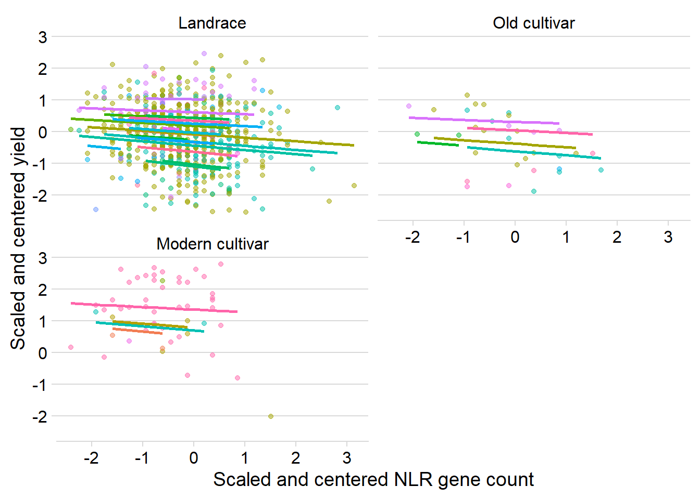 Quite similar, mostly downwards trajectories for each country.
Let’s do that non-normalised:
mixed.lmer <- lmer(Yield ~ presences.x + Group + (1 + presences.x|Country), data=yield_country_nbs_joined_groups)Warning in checkConv(attr(opt, "derivs"), opt$par, ctrl = control$checkConv, :
unable to evaluate scaled gradientWarning in checkConv(attr(opt, "derivs"), opt$par, ctrl = control$checkConv, :
Model failed to converge: degenerate Hessian with 2 negative eigenvaluesWarning: Model failed to converge with 1 negative eigenvalue: -9.3e+04summary(mixed.lmer)Linear mixed model fit by REML. t-tests use Satterthwaite's method [
lmerModLmerTest]
Formula: Yield ~ presences.x + Group + (1 + presences.x | Country)
Data: yield_country_nbs_joined_groups
REML criterion at convergence: 1675.2
Scaled residuals:
Min 1Q Median 3Q Max
-3.1863 -0.5679 0.0294 0.6532 2.8982
Random effects:
Groups Name Variance Std.Dev. Corr
Country (Intercept) 5.191e-01 0.7204930
presences.x 2.402e-07 0.0004901 -0.98
Residual 5.206e-01 0.7215284
Number of obs: 741, groups: Country, 40
Fixed effects:
Estimate Std. Error df t value Pr(>|t|)
(Intercept) 8.73673 2.46492 709.51652 3.544 0.000419 ***
presences.x -0.01499 0.00555 412.58876 -2.702 0.007186 **
GroupOld cultivar -0.24420 0.13365 733.16976 -1.827 0.068096 .
GroupModern cultivar 0.83046 0.18493 218.59478 4.491 1.15e-05 ***
---
Signif. codes: 0 '***' 0.001 '**' 0.01 '*' 0.05 '.' 0.1 ' ' 1
Correlation of Fixed Effects:
(Intr) prsnc. GrpOlc
presences.x -0.999
GrpOldcltvr 0.002 -0.007
GrpMdrncltv -0.076 0.067 0.156
convergence code: 0
unable to evaluate scaled gradient
Model failed to converge: degenerate Hessian with 2 negative eigenvaluesggplot(yield_country_nbs_joined_groups, aes(x = presences.x, y = Yield, colour = Country)) +
facet_wrap(~Group, nrow=1) + # a panel for each mountain range
geom_point(alpha = 0.5) +
theme_classic() +
geom_line(data = cbind(yield_country_nbs_joined_groups, pred = predict(mixed.lmer)), aes(y = pred), size = 1) +
theme_minimal_hgrid() +
theme(legend.position = "none") +
xlab('NLR gene count') +
ylab('Yield') +
scale_color_manual(values=as.vector(isol(40)))Quite similar, mostly downwards trajectories for each country.
And now both random slopes:
mixed.lmer <- lmer(Yield2 ~ presences2 + (presences2|Group) + (1 + presences2|Country), data=yield_country_nbs_joined_groups)
summary(mixed.lmer)Linear mixed model fit by REML. t-tests use Satterthwaite's method [
lmerModLmerTest]
Formula: Yield2 ~ presences2 + (presences2 | Group) + (1 + presences2 |
Country)
Data: yield_country_nbs_joined_groups
REML criterion at convergence: 1953.7
Scaled residuals:
Min 1Q Median 3Q Max
-3.11214 -0.56909 0.04459 0.66469 2.91084
Random effects:
Groups Name Variance Std.Dev. Corr
Country (Intercept) 0.42704 0.6535
presences2 0.01045 0.1022 0.81
Group (Intercept) 0.37523 0.6126
presences2 0.04201 0.2050 0.18
Residual 0.75392 0.8683
Number of obs: 741, groups: Country, 40; Group, 3
Fixed effects:
Estimate Std. Error df t value Pr(>|t|)
(Intercept) 0.03595 0.38772 2.35869 0.093 0.933
presences2 -0.23848 0.14300 1.96304 -1.668 0.240
Correlation of Fixed Effects:
(Intr)
presences2 0.231 ggplot(yield_country_nbs_joined_groups, aes(x = presences2, y = Yield2, colour = Country)) +
facet_wrap(~Group, nrow=1) + # a panel for each mountain range
geom_point(alpha = 0.5) +
theme_classic() +
geom_line(data = cbind(yield_country_nbs_joined_groups, pred = predict(mixed.lmer)), aes(y = pred), size = 1) +
theme_minimal_hgrid() +
theme(legend.position = "none") +
xlab('Scaled and centered NLR gene count') +
ylab('Scaled and centered yield') +
scale_color_manual(values=as.vector(isol(40)))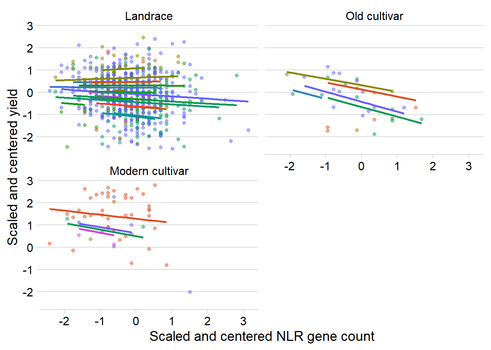 Yeah, nah
Oil
oil_country_nbs_joined_groups <- oil_nbs_joined_groups %>% inner_join(country)
mixed.lmer <- lmer(Oil2 ~ presences2 + Group + (1|Country), data=oil_country_nbs_joined_groups)
summary(mixed.lmer)Linear mixed model fit by REML. t-tests use Satterthwaite's method [
lmerModLmerTest]
Formula: Oil2 ~ presences2 + Group + (1 | Country)
Data: oil_country_nbs_joined_groups
REML criterion at convergence: 1808.3
Scaled residuals:
Min 1Q Median 3Q Max
-4.5285 -0.5605 0.0983 0.6472 3.2209
Random effects:
Groups Name Variance Std.Dev.
Country (Intercept) 0.07703 0.2775
Residual 0.39128 0.6255
Number of obs: 929, groups: Country, 41
Fixed effects:
Estimate Std. Error df t value Pr(>|t|)
(Intercept) -1.66466 0.09388 57.11719 -17.732 <2e-16 ***
presences2 -0.03579 0.02416 917.65081 -1.481 0.139
GroupLandrace 1.93042 0.06953 911.95172 27.763 <2e-16 ***
GroupOld cultivar 2.25628 0.11897 922.58914 18.965 <2e-16 ***
GroupModern cultivar 2.46605 0.14998 209.92967 16.443 <2e-16 ***
---
Signif. codes: 0 '***' 0.001 '**' 0.01 '*' 0.05 '.' 0.1 ' ' 1
Correlation of Fixed Effects:
(Intr) prsnc2 GrpLnd GrpOlc
presences2 -0.232
GroupLandrc -0.644 0.434
GrpOldcltvr -0.405 0.249 0.509
GrpMdrncltv -0.447 0.246 0.432 0.338No significance here.
Protein
protein_nbs_joined_groups <- nbs_joined_groups %>% inner_join(protein_join, by = 'names')
protein_nbs_joined_groups$Protein2 <- scale(protein_nbs_joined_groups$Protein, center=T, scale=T)
protein_country_nbs_joined_groups <- protein_nbs_joined_groups %>% inner_join(country)
mixed.lmer <- lmer(Protein2 ~ presences2 + Group + (1|Country), data=protein_country_nbs_joined_groups)
summary(mixed.lmer)Linear mixed model fit by REML. t-tests use Satterthwaite's method [
lmerModLmerTest]
Formula: Protein2 ~ presences2 + Group + (1 | Country)
Data: protein_country_nbs_joined_groups
REML criterion at convergence: 2472.7
Scaled residuals:
Min 1Q Median 3Q Max
-3.6001 -0.6747 -0.0423 0.6274 3.5103
Random effects:
Groups Name Variance Std.Dev.
Country (Intercept) 0.07042 0.2654
Residual 0.81212 0.9012
Number of obs: 929, groups: Country, 41
Fixed effects:
Estimate Std. Error df t value Pr(>|t|)
(Intercept) 0.52736 0.11992 77.94050 4.397 3.43e-05 ***
presences2 0.04347 0.03466 923.71757 1.254 0.21
GroupLandrace -0.72486 0.09980 923.95960 -7.263 8.04e-13 ***
GroupOld cultivar -1.20226 0.17045 923.25626 -7.053 3.42e-12 ***
GroupModern cultivar -1.10372 0.20076 140.80066 -5.498 1.76e-07 ***
---
Signif. codes: 0 '***' 0.001 '**' 0.01 '*' 0.05 '.' 0.1 ' ' 1
Correlation of Fixed Effects:
(Intr) prsnc2 GrpLnd GrpOlc
presences2 -0.277
GroupLandrc -0.712 0.438
GrpOldcltvr -0.445 0.253 0.511
GrpMdrncltv -0.507 0.270 0.463 0.340No significance here.
Seed weight
seed_nbs_joined_groups <- nbs_joined_groups %>% inner_join(seed_join, by = 'names')
seed_nbs_joined_groups$wt2 <- scale(seed_nbs_joined_groups$wt, center=T, scale=T)
seed_country_nbs_joined_groups <- seed_nbs_joined_groups %>% inner_join(country)
mixed.lmer <- lmer(wt2 ~ presences2 + Group + (1|Country), data=seed_country_nbs_joined_groups)
summary(mixed.lmer)Linear mixed model fit by REML. t-tests use Satterthwaite's method [
lmerModLmerTest]
Formula: wt2 ~ presences2 + Group + (1 | Country)
Data: seed_country_nbs_joined_groups
REML criterion at convergence: 1676
Scaled residuals:
Min 1Q Median 3Q Max
-2.9614 -0.6215 0.0110 0.5831 4.8138
Random effects:
Groups Name Variance Std.Dev.
Country (Intercept) 0.08566 0.2927
Residual 0.70082 0.8371
Number of obs: 664, groups: Country, 38
Fixed effects:
Estimate Std. Error df t value Pr(>|t|)
(Intercept) -2.348857 0.183189 90.849260 -12.822 < 2e-16 ***
presences2 -0.007261 0.040531 656.652662 -0.179 0.858
GroupLandrace 2.412123 0.166724 600.989922 14.468 < 2e-16 ***
GroupOld cultivar 2.727120 0.224422 656.159635 12.152 < 2e-16 ***
GroupModern cultivar 2.782167 0.259555 67.478942 10.719 3.26e-16 ***
---
Signif. codes: 0 '***' 0.001 '**' 0.01 '*' 0.05 '.' 0.1 ' ' 1
Correlation of Fixed Effects:
(Intr) prsnc2 GrpLnd GrpOlc
presences2 -0.267
GroupLandrc -0.864 0.364
GrpOldcltvr -0.666 0.274 0.710
GrpMdrncltv -0.663 0.298 0.648 0.539Again, no significance here.
The final yield model
This is the final yield model for the paper
mixed.lmer <- lmer(Yield ~ presences.x + Group + (1|Country), data=yield_country_nbs_joined_groups)
summary(mixed.lmer)Linear mixed model fit by REML. t-tests use Satterthwaite's method [
lmerModLmerTest]
Formula: Yield ~ presences.x + Group + (1 | Country)
Data: yield_country_nbs_joined_groups
REML criterion at convergence: 1675.1
Scaled residuals:
Min 1Q Median 3Q Max
-3.1864 -0.5700 0.0305 0.6525 2.8982
Random effects:
Groups Name Variance Std.Dev.
Country (Intercept) 0.2581 0.5081
Residual 0.5206 0.7216
Number of obs: 741, groups: Country, 40
Fixed effects:
Estimate Std. Error df t value Pr(>|t|)
(Intercept) 8.760056 2.465570 726.660933 3.553 0.000406 ***
presences.x -0.015045 0.005556 726.459065 -2.708 0.006929 **
GroupOld cultivar -0.244554 0.133648 734.951816 -1.830 0.067680 .
GroupModern cultivar 0.830604 0.184672 360.407255 4.498 9.28e-06 ***
---
Signif. codes: 0 '***' 0.001 '**' 0.01 '*' 0.05 '.' 0.1 ' ' 1
Correlation of Fixed Effects:
(Intr) prsnc. GrpOlc
presences.x -0.999
GrpOldcltvr 0.003 -0.008
GrpMdrncltv -0.074 0.065 0.156ggplot(yield_country_nbs_joined_groups, aes(x = presences.x, y = Yield, colour = Country)) +
facet_wrap(~Group, nrow=1) + # a panel for each mountain range
geom_point(alpha = 0.5) +
geom_line(data = cbind(yield_country_nbs_joined_groups, pred = predict(mixed.lmer)), aes(y = pred), size = 1) +
theme_minimal_hgrid() +
theme(legend.position = "none") +
xlab('NLR gene count') +
ylab('Yield') +
scale_color_manual(values=as.vector(isol(40)))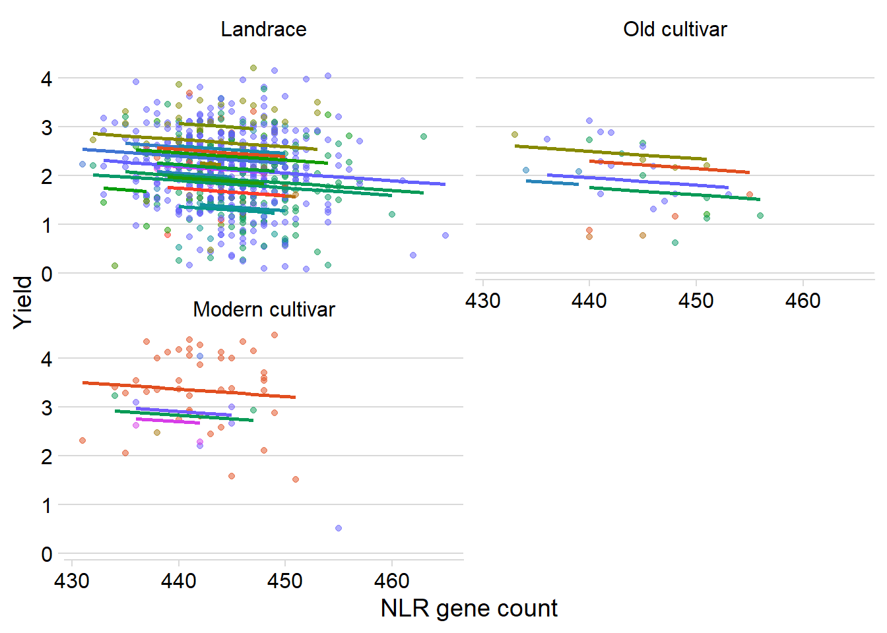
plot(mixed.lmer)
qqnorm(resid(mixed.lmer))
qqline(resid(mixed.lmer))
plot(resid(mixed.lmer))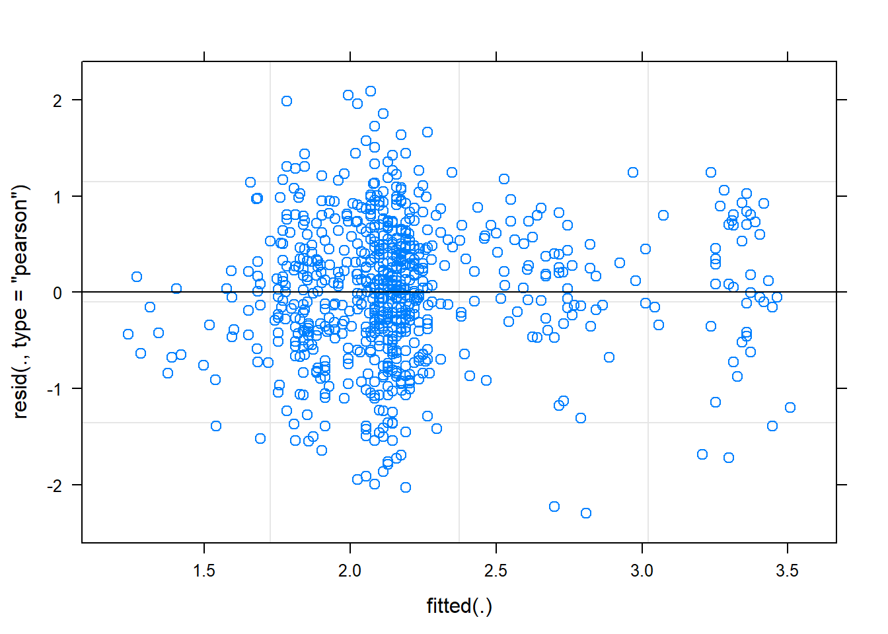
detach("package:lmerTest", unload=TRUE)
yield_country_nbs_joined_groups_renamed <- yield_country_nbs_joined_groups
names(yield_country_nbs_joined_groups_renamed) <- c('names', 'Count', 'PI-ID', 'Group', 'presences2.x', 'presences.y', 'Yield', 'Yield2.x', 'Country')
mixed.lmer <- lmer(Yield ~ `Count` + Group + (1|Country), data=yield_country_nbs_joined_groups_renamed)
yield_country_nbs_joined_groups_renamed# A tibble: 741 x 9
names Count `PI-ID` Group presences2.x[,1] presences.y Yield Yield2.x[,1]
<chr> <dbl> <chr> <fct> <dbl> <dbl> <dbl> <dbl>
1 AB-01 445 PI4580~ Land~ -0.119 445 1.54 -0.774
2 AB-02 454 PI6037~ Land~ 1.35 454 1.3 -1.06
3 For 448 PI5486~ Mode~ 0.371 448 3.34 1.40
4 HN001 448 PI5186~ Mode~ 0.371 448 3.54 1.64
5 HN005 440 PI4041~ Land~ -0.935 440 2.15 -0.0366
6 HN006 448 PI4077~ Land~ 0.371 448 2.06 -0.145
7 HN007 442 PI4242~ Land~ -0.609 442 1.64 -0.653
8 HN008 439 PI4376~ Land~ -1.10 439 2.51 0.399
9 HN009 445 PI4950~ Land~ -0.119 445 1.85 -0.399
10 HN010 447 PI4689~ Land~ 0.207 447 2.8 0.749
# ... with 731 more rows, and 1 more variable: Country <chr>dwplot(mixed.lmer,
vline = geom_vline(xintercept = 0, colour = "grey60", linetype = 2))library(stargazer)
stargazer(mixed.lmer, type = "text",
digits = 3,
star.cutoffs = c(0.05, 0.01, 0.001),
digit.separator = "")
==================================================
Dependent variable:
-----------------------------
Yield
--------------------------------------------------
Count -0.015**
(0.006)
GroupOld cultivar -0.245
(0.134)
GroupModern cultivar 0.831***
(0.185)
Constant 8.760***
(2.466)
--------------------------------------------------
Observations 741
Log Likelihood -837.565
Akaike Inf. Crit. 1687.131
Bayesian Inf. Crit. 1714.779
==================================================
Note: *p<0.05; **p<0.01; ***p<0.001library(ggeffects)
ggpredict(mixed.lmer, terms = c("Count", 'Group'), type = "re") %>%
plot() +
theme_minimal_hgrid() +
xlab('NLR count') +
theme(plot.title=element_blank())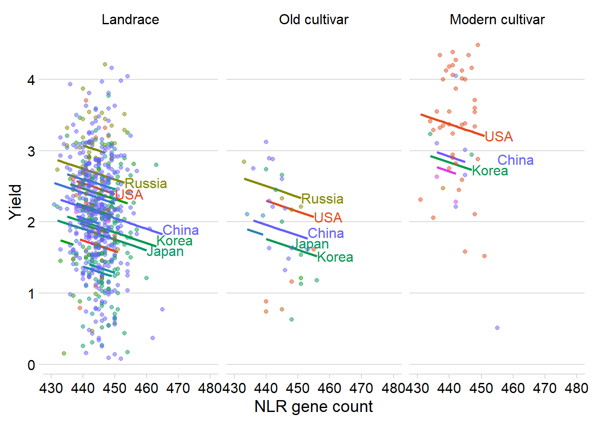
library(sjPlot)
plot_model(mixed.lmer, data=yield_country_nbs_joined_groups_renamed) +
theme_minimal_hgrid()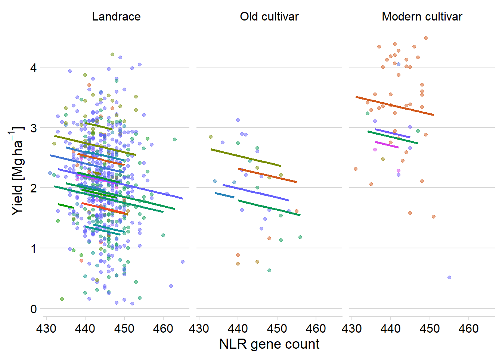
plot_model(mixed.lmer, type = "pred", terms = c("Count", "Group")) +
theme_minimal_hgrid() +
xlab('NLR count') +
theme(plot.title=element_blank())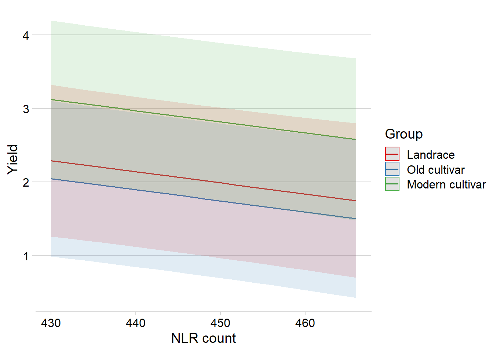
tab_model(mixed.lmer, p.val='kr')| Yield | |||
|---|---|---|---|
| Predictors | Estimates | CI | p |
| (Intercept) | 8.76 | 3.91 – 13.61 | <0.001 |
| Count | -0.02 | -0.03 – -0.00 | 0.007 |
| Group [Old cultivar] | -0.24 | -0.51 – 0.02 | 0.068 |
| Group [Modern cultivar] | 0.83 | 0.46 – 1.20 | <0.001 |
| Random Effects | |||
| σ2 | 0.52 | ||
| τ00 Country | 0.26 | ||
| ICC | 0.33 | ||
| N Country | 40 | ||
| Observations | 741 | ||
| Marginal R2 / Conditional R2 | 0.070 / 0.378 | ||
σ measures the random effect variance I think, 0.52 is pretty good (this can easily be >1), but more useful to compare models with each other which I don’t do here.
intraclass-correlation coefficient (ICC) measures how the proportion of variance explained by the grouping structure, in this case, country
sessionInfo()R version 3.6.3 (2020-02-29)
Platform: x86_64-w64-mingw32/x64 (64-bit)
Running under: Windows 10 x64 (build 17134)
Matrix products: default
locale:
[1] LC_COLLATE=English_Australia.1252 LC_CTYPE=English_Australia.1252
[3] LC_MONETARY=English_Australia.1252 LC_NUMERIC=C
[5] LC_TIME=English_Australia.1252
attached base packages:
[1] stats graphics grDevices utils datasets methods base
other attached packages:
[1] ggeffects_0.16.0 stargazer_5.2.2 pals_1.6
[4] dotwhisker_0.5.0 sjPlot_2.8.6 lme4_1.1-21
[7] Matrix_1.2-18 ggforce_0.3.1 ggsignif_0.6.0
[10] cowplot_1.0.0 dabestr_0.3.0 magrittr_1.5
[13] ggsci_2.9 patchwork_1.0.0 forcats_0.5.0
[16] stringr_1.4.0 dplyr_1.0.0 purrr_0.3.4
[19] readr_1.3.1 tidyr_1.1.0 tibble_3.0.2
[22] ggplot2_3.3.2 tidyverse_1.3.0 workflowr_1.6.2.9000
loaded via a namespace (and not attached):
[1] TH.data_1.0-10 minqa_1.2.4 colorspace_1.4-1
[4] ellipsis_0.3.1 sjlabelled_1.1.7 rprojroot_1.3-2
[7] estimability_1.3 ggstance_0.3.4 parameters_0.9.0
[10] fs_1.5.0.9000 dichromat_2.0-0 rstudioapi_0.11
[13] glmmTMB_1.0.2.1 hexbin_1.28.1 farver_2.0.3
[16] fansi_0.4.1 mvtnorm_1.1-1 lubridate_1.7.9
[19] xml2_1.3.2 codetools_0.2-16 splines_3.6.3
[22] knitr_1.29 sjmisc_2.8.5 polyclip_1.10-0
[25] jsonlite_1.7.1 nloptr_1.2.1 broom_0.5.6
[28] dbplyr_1.4.4 effectsize_0.4.0 mapproj_1.2.7
[31] compiler_3.6.3 httr_1.4.2 sjstats_0.18.0
[34] emmeans_1.4.5 backports_1.1.10 assertthat_0.2.1
[37] cli_2.0.2 later_1.1.0.1 tweenr_1.0.1
[40] htmltools_0.5.0 tools_3.6.3 coda_0.19-3
[43] gtable_0.3.0 glue_1.4.2 maps_3.3.0
[46] Rcpp_1.0.5 cellranger_1.1.0 vctrs_0.3.1
[49] nlme_3.1-148 insight_0.10.0 xfun_0.17
[52] ps_1.3.4 rvest_0.3.5 lifecycle_0.2.0
[55] getPass_0.2-2 MASS_7.3-51.6 zoo_1.8-8
[58] scales_1.1.1 hms_0.5.3 promises_1.1.1
[61] sandwich_2.5-1 RColorBrewer_1.1-2 TMB_1.7.16
[64] yaml_2.2.1 stringi_1.5.3 bayestestR_0.7.5
[67] boot_1.3-25 rlang_0.4.7 pkgconfig_2.0.3
[70] evaluate_0.14 lattice_0.20-41 labeling_0.3
[73] processx_3.4.4 tidyselect_1.1.0 plyr_1.8.6
[76] R6_2.4.1 generics_0.0.2 multcomp_1.4-13
[79] DBI_1.1.0 mgcv_1.8-31 pillar_1.4.4
[82] haven_2.3.1 whisker_0.4 withr_2.2.0
[85] survival_3.2-3 performance_0.5.1 modelr_0.1.8
[88] crayon_1.3.4 utf8_1.1.4 rmarkdown_2.3
[91] grid_3.6.3 readxl_1.3.1 blob_1.2.1
[94] callr_3.4.4 git2r_0.27.1 reprex_0.3.0
[97] digest_0.6.25 xtable_1.8-4 httpuv_1.5.4
[100] numDeriv_2016.8-1.1 munsell_0.5.0